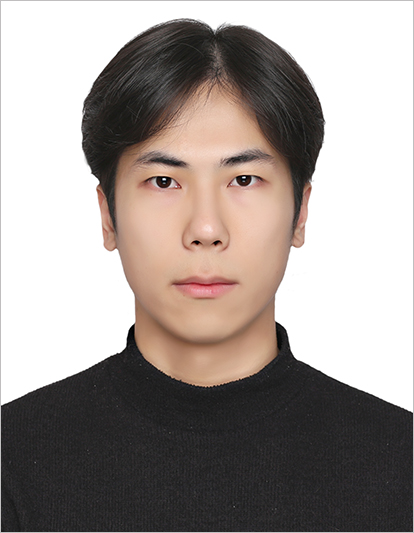

Hyunjung Lee (M.S. Graduate Student Candidate)
|  | Master Graduate Student (M.S), Embedded System-on-Chip Integrator |
Repository Commit History
 |
Introduction
Full Bio Sketch
Mr. Lee received his B.S. degree in Electronics Engineering at Kyungpook National University, Daegu, Republic of Korea in 2024. He is currently pursuing toward his M.S. graduate degree in Electronics Engineering at Kyungpook National University, Daegu, Republic of Korea. His research interests cover automotive embedded systems, specially in designing multi-camera interoperable emulation framework using embedded edge-cloud AI computing for autonomous vehicle driving. He is pursuing his research to implement the entire full stacks from low-level embedded firmware to autonomous driving algorithm, including the hardware systems, by interoperating human-interative interfaces.
Research Topic
Vehicle-Controller-Interface Interoperation Emulation Framework
 Frames from four cameras connected to the Raspberry Pi are transmitted to the PC for streaming. On the PC, object detection is performed using yolo based on this streaming screen to determine the location of the object and the distance to the object. Using the identified information, the handling angle and speed for safe driving of the vehicle are appropriately set and transmitted to the Arduino board to ultimately control the vehicle. Additionally, the yoke steering wheel is linked to the PC to transmit the user's current handling angle information. In the process of processing information, control is basically based on the user's current handling angle, and if the angle differs by more than a certain amount from the handling angle for safe driving, not the current handling angle but the handling angle for safe driving is applied to control. Through this, it is possible to respond to various dangerous situations such as lane departure and obstacle collision that can occur when the driver cannot fully concentrate on driving. In driving situations, among the four cameras, information from the front camera is given the highest priority, and information from other cameras is used only in dangerous situations that have exceeded the threshold, allowing the driver to respond to emergency situations.
Frames from four cameras connected to the Raspberry Pi are transmitted to the PC for streaming. On the PC, object detection is performed using yolo based on this streaming screen to determine the location of the object and the distance to the object. Using the identified information, the handling angle and speed for safe driving of the vehicle are appropriately set and transmitted to the Arduino board to ultimately control the vehicle. Additionally, the yoke steering wheel is linked to the PC to transmit the user's current handling angle information. In the process of processing information, control is basically based on the user's current handling angle, and if the angle differs by more than a certain amount from the handling angle for safe driving, not the current handling angle but the handling angle for safe driving is applied to control. Through this, it is possible to respond to various dangerous situations such as lane departure and obstacle collision that can occur when the driver cannot fully concentrate on driving. In driving situations, among the four cameras, information from the front camera is given the highest priority, and information from other cameras is used only in dangerous situations that have exceeded the threshold, allowing the driver to respond to emergency situations.
The distance to an object is defined by converting the coordinates of an object detected in a two-dimensional plane into coordinates in a three-dimensional space based on camera calibration information and measuring the distance from the coordinates where the camera is located. In addition to this method, we are researching various methods of recognizing the distance to an object using a monocular camera, and plan to apply the optimal method.
Auto Parking Interoperation Emulation Framework
Additionally, in parking situations, the car is designed to recognize parking lines around the vehicle using four cameras and then automatically park along the optimal parking route by appropriately switching between drive mode and rear mode. The around view, as if looking at the vehicle from above, displays the vehicle when it is parked, allowing the driver to also understand the surrounding situation. Object detection in parking situations raises the standard for risk judgment higher than in driving situations, allowing parking to proceed while safely responding to situations such as when a vehicle or person suddenly passes by while parking.
3D Mapping
 Using a monocular camera, there is a limitation for applying the algorithms to various situation and reflecting an accurate environment surrounding a vehicle. Therefore, I used stereo camera calibration and stereo vision that can estimate distance from the objects with two cameras (left & right). For 3D mapping, a depth map that reflects the distance from the objects is needed. The depth map can be generated by some functions of the OpenCV, but the provided functions are not good at reflecting real-time. So, I aim to make an own depth map generation model. Each frame is revised to reflect the surrounding frames. By comparing the left and right frames, a depth map can be generated. To elaborate the own depth map, shadows must be removed. The shadows can be removed by mean shift filtering using edges of the screen. By image stitching, the depth maps streaming a front, left, rear and right can be merged so the 3D map that reflects surrounding the vehicle can be generated.
Using a monocular camera, there is a limitation for applying the algorithms to various situation and reflecting an accurate environment surrounding a vehicle. Therefore, I used stereo camera calibration and stereo vision that can estimate distance from the objects with two cameras (left & right). For 3D mapping, a depth map that reflects the distance from the objects is needed. The depth map can be generated by some functions of the OpenCV, but the provided functions are not good at reflecting real-time. So, I aim to make an own depth map generation model. Each frame is revised to reflect the surrounding frames. By comparing the left and right frames, a depth map can be generated. To elaborate the own depth map, shadows must be removed. The shadows can be removed by mean shift filtering using edges of the screen. By image stitching, the depth maps streaming a front, left, rear and right can be merged so the 3D map that reflects surrounding the vehicle can be generated.
Publications
Journal Publication
Hyunjung Lee and Daejin Park. Auto Parking Assistant Control using Human-Activity Feedback-based Embedded Software Emulation (KCI) (Under Review) Journal of the Korea Institute of Information and Communication Engineering, 2024.
Conference Publications (Intl. 1)
Hyunjung Lee and Daejin Park. Multi-Camera Interoperable Emulation Framework using Embedded Edge-Cloud AI Computing for Autonomous Vehicle Driving In IEEE Vehicular Networking Conference (VNC), 2024.
Hyunjung Lee and Daejin Park. Convolution-Based Depth Map With Shadow Removal Using Cameras for 3D Mapping in Autonomous Vehicle Driving (Under Review) In IEEE International Symposium on Intelligent Signal Processing and Communication Systems (ISPACS 2024), 2024.
Participation in International Conference
IEEE VNC 2024, Kobe, Japan
IEEE ISPACS 2024, Taipei, Taiwan
Last Updated, 2024.8.10